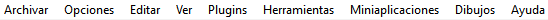
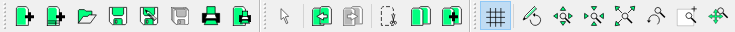
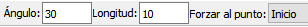
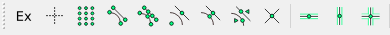
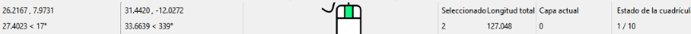
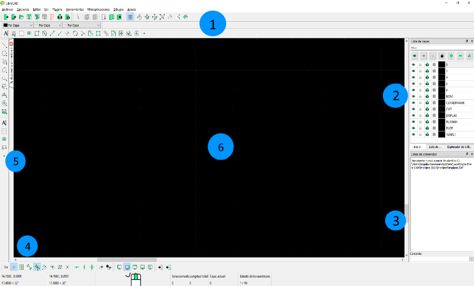

Navegar por la pantalla principal
LibreCAD para ProNest ofrece una pantalla principal de dibujo personalizable, en la que puede reacomodar y redimensionar las barras de herramientas y las miniaplicaciones anclables. La configuración predeterminada se describe a continuación.
En general, hay seis áreas primarias de la aplicación principal LibreCAD, resaltadas por círculos azules.
- Área del Menú principal
- Menús de Archivo, Opciones, Editar, Visualizar, Plugins, Herramientas, Miniaplicaciones, Dibujos y Ayuda.

- Debajo del área de menú principal se encuentran los botones de opción de archivo (tales como nuevo dibujo, abrir dibujo), los botones copiar/pegar y los botones de zoom.

- Las opciones de pluma se encuentran arriba de la barra de herramientas personalizada. Las opciones de pluma le permiten controlar el color de pluma, grosor y tipo de línea.
- El área de barra de estado de herramientas es en dónde encontrará los parámetros de algunas herramientas. La barra de estado no se muestra hasta que comienza a utilizar una herramienta, tal como Texto. Al estar activa, aparecerá debajo de las Opciones de pluma. Vigile esta área para indicaciones al utilizar herramientas.

- Área de miniaplicaciones anclables: Explorador de Bibliotecas, Lista de Bloques y Lista de Capas.
- Línea de Comandos: indicador de Línea de Comandos en ventana anclable. Vigile esta área para indicaciones al utilizar herramientas.
- Área de Forzar y Barra de Estado
- Botones Forzar/restringir.

- Botones para Configurar y Bloquear Cero Relativo.

- Opciones de mostrar/ocultar barra de herramientas.

- Creadores de Menús y Barras de herramientas.

- Debajo de los botones hay información acerca de las coordenadas del mouse, longitud de los objetos seleccionados, capa actual y estado de la cuadrícula.

- Herramientas para acceso rápido
- Menús de herramientas de dibujo principales, incluyendo herramientas de Líneas, Círculos, Curvas, Elipses, Polilíneas, Seleccionar, Cota, Modificar y Medir.
- Las pestañas de Dibujo se encuentran localizadas entre las herramientas y la pantalla de dibujo principal. Las pestañas están apiladas verticalmente.
- Área de Dibujo: los objetos y texto se dibujan en esta área. Los archivos de imagen también pueden importarse y posicionarse en un dibujo. Como predeterminado, el color del fondo es negro, pero puede cambiarse en las Preferencias de Aplicación.
